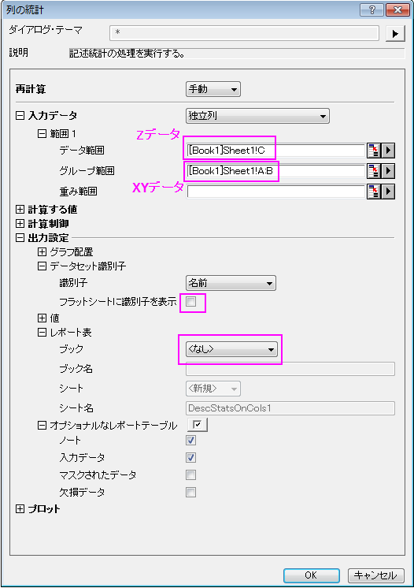

FAQ-504 XYまたはXYZデータをどのように削減したらよいでしょうか
最終更新日:2015/02/04
Reduce-XY-XYZ-Dataset
XYデータセット内に含まれる重複するXデータを削減したい場合、Y列を選択して、解析：データ操作：データ削減：重複Xを選択します。Xファンクションreducedupのダイアログが開きます。
XYZデータデットから重複するXYデータを削除したい場合、列の統計の機能を使用し、以下のように操作します。
- Z列を選択して、統計：記述統計：列の統計を選択します。データ範囲に選択して列が入力されます。
- グループとしてXとYの列を選択します。
- 計算する値の分位数の項目で、重複した場合に置換する分位数を選択します（最大、中央値、最大など）。
- 置換えられた重複XYの数を出力するには、モーメントの項目のX合計にチェックを付けます。
- 出力設定のデータセット識別子の項目で、フラットシートに識別名を表示のチェックを外し、レポート表の項目では、ブックをなしにします。
- 
- OKをクリックして統計を実行します。レポートシートに重複XYを削減したXYZデータが出力されます。
| Note:2つ目の列の統計を使用する方法と同様にして、XYYデータの重複XYデータで削減することもできます。 |
キーワード:データ削減, 重複を削除, 重複行, データ操作, ネストされた列, 列の統計, X削減, XとYを削減